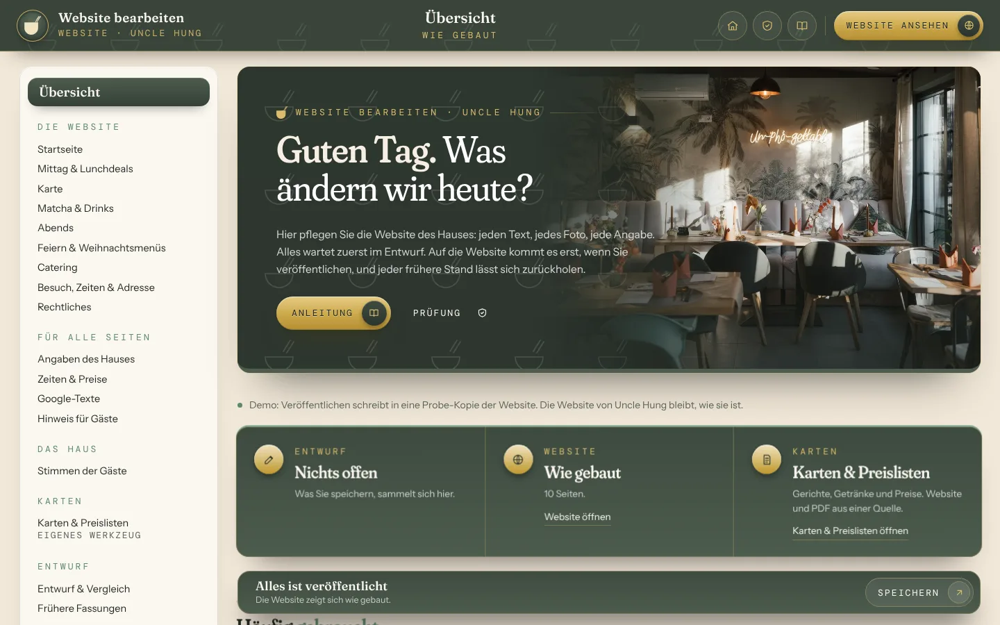
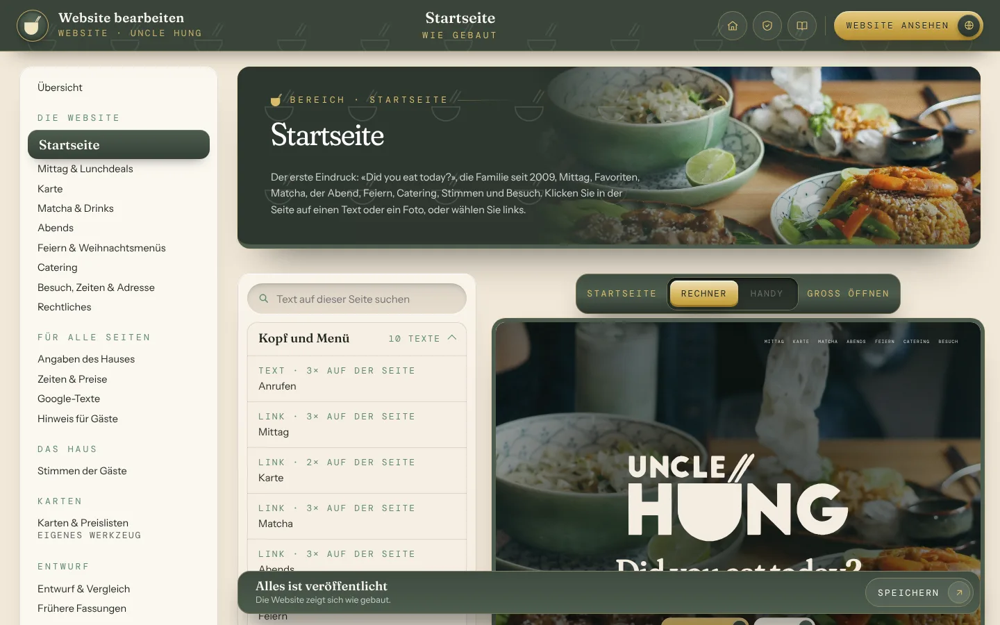
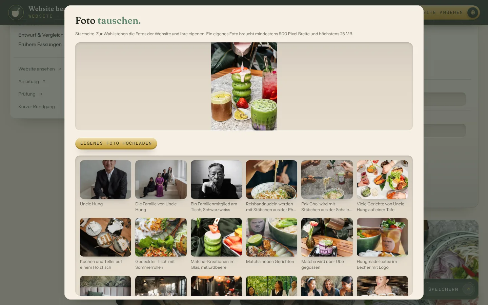
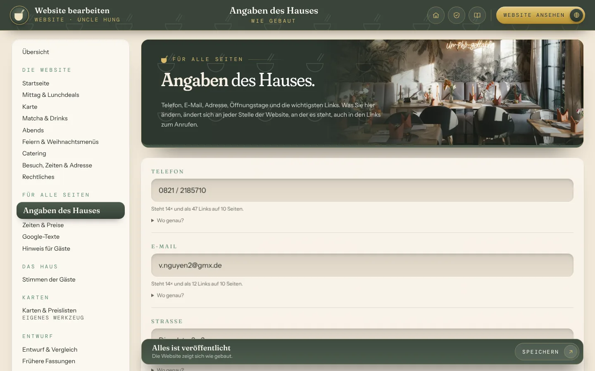
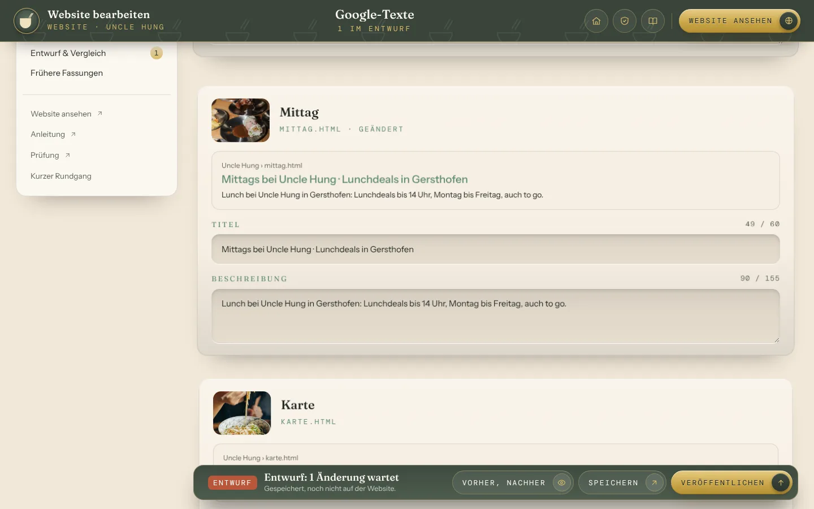
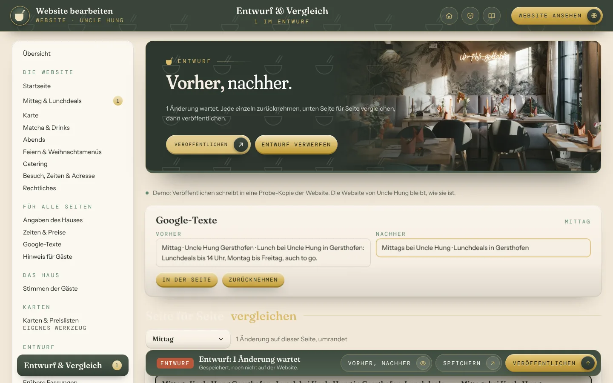
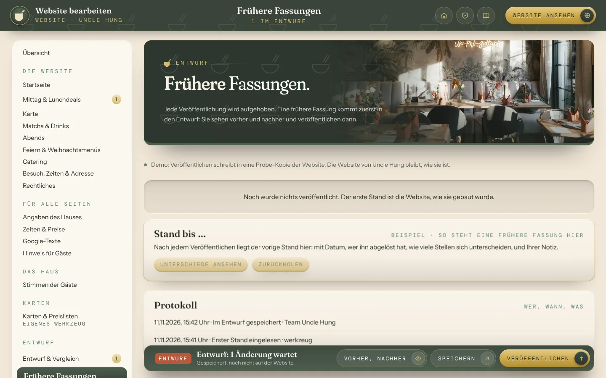

Website bearbeiten
So pflegen Sie Ihre Website.
Mit «Website bearbeiten» pflegen Sie die Website von Uncle Hung selbst. Jeder Text, jedes Foto, Telefon, Adresse, Öffnungszeiten und die Texte für Google lassen sich hier ändern. Nichts geht von selbst online: Was Sie speichern, wartet im Entwurf, bis Sie es veröffentlichen. Jeder frühere Stand lässt sich zurückholen.
1
Die Übersicht
Oben sehen Sie, ob etwas im Entwurf wartet und wann die Website zuletzt veröffentlicht wurde. Darunter «Häufig gebraucht»: die Aufgaben, die im Alltag am meisten vorkommen. Ganz unten jeder Bereich der Website mit einem Foto.
Links im Rand finden Sie dieselben Bereiche, dazu «Angaben des Hauses», «Zeiten & Preise», «Google-Texte», «Hinweis für Gäste» und die Stimmen der Gäste.

2
Einen Text ändern
Bereich wählen, zum Beispiel «Startseite». Rechts steht die Seite, wie die Gäste sie sehen. Klicken Sie auf den Text, den Sie ändern möchten: links öffnet sich das Feld, die Seite rechts schreibt beim Tippen mit.
Steht derselbe Text auf mehreren Seiten, bietet das Feld «An allen … Stellen ändern». Statt etwas zu löschen, lässt sich ein ganzer Abschnitt ausblenden und später «Wieder zeigen».

3
Foto tauschen oder eigenes Foto hochladen
Klicken Sie in der Seite auf ein Foto, oder bei den Stimmen der Gäste auf das Foto eines Eintrags. Zur Wahl stehen alle Fotos der Website. Mit «Eigenes Foto hochladen» kommt ein neues dazu: mindestens 900 Pixel breit, höchstens 25 MB, als JPG, PNG oder WebP.
Darunter ein Satz, was auf dem Foto zu sehen ist: Ihn lesen Vorlesegeräte und Suchmaschinen.

4
Telefon, Adresse, Öffnungszeiten
Unter «Angaben des Hauses» steht jede Angabe, die auf vielen Seiten vorkommt. Sie ändern sie einmal, und sie ist überall neu, auch im Link zum Anrufen.
Öffnungszeiten und Preise im Text finden Sie unter «Zeiten & Preise». Lunchdeals, Gerichte, Drinks und Weihnachtsmenüs pflegen Sie in «Karten & Preislisten».

5
Google-Texte
Für jede Seite ein Titel und eine Beschreibung, so wie sie in der Trefferliste von Google erscheinen. Die Vorschau darüber zeigt es beim Tippen. Etwa 60 Zeichen Titel und 155 Zeichen Beschreibung zeigt Google ganz, die Zahl wird rot, wenn es länger wird.

6
Speichern, ansehen, veröffentlichen
Ist etwas nicht gespeichert, leuchtet unten «Speichern». Danach erscheint eine Quittung mit «Vorher/nachher ansehen» und «Rückgängig».
«Vorher, nachher» zeigt jede Änderung alt und neu, einzeln zurücknehmbar. «Veröffentlichen» bringt den Entwurf auf die Website. In der Demo geht das in eine Probe-Kopie, die Website bleibt, wie sie ist.

7
Einen früheren Stand zurückholen
Unter «Frühere Fassungen» steht jede Veröffentlichung mit Datum und Notiz. «Zurückholen» legt sie in den Entwurf. Auf die Website kommt sie erst, wenn Sie wieder veröffentlichen.

8
Wenn etwas nicht klappt
Jede Meldung trägt den Knopf «Was tun?». Er führt zur Prüfung: Sie läuft auch dann, wenn das Werkzeug selbst nicht startet, sagt, was los ist, und was zu tun ist. Gespeichertes geht dabei nie verloren.